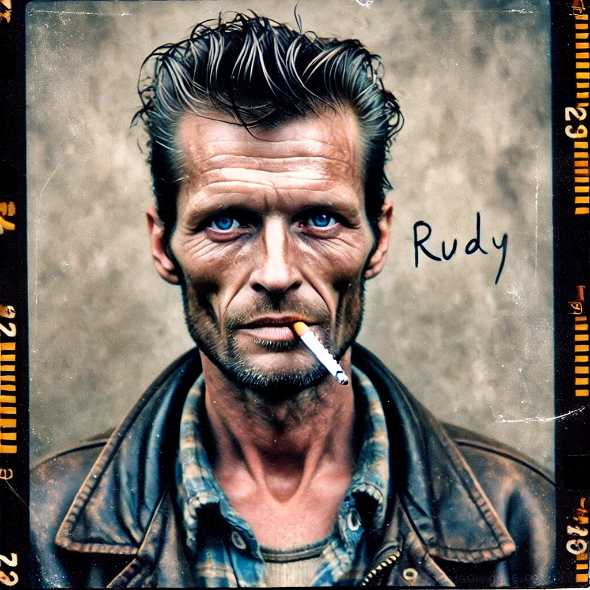

Rudy Williams

Alias/Nickname: None known
Role in Setting: Veteran Monster Hunter, Protector of Phoebe, Survivor of supernatural events
Based in: Shepherd's Inn in Shepherd Junction, Colorado
Background (Pre-King County)¶
-
Origins: Rudy was part of a group of kids who survived a supernatural encounter in California, inspired by the true events behind The Monster Squad (Movie). He was one of the only people who understood the real stakes of the situation, not the fictionalized version. As a teenager, he helped prevent a powerful vampire (not Dracula, as in the movie) from opening a portal to a realm—potentially Limbo, the Abyss, or the Underworld.
-
Supernatural Battle: During the California events, a local werewolf pack tried to take down the vampire but failed, with one member ending up blood-bound to the vampire. Rudy and his friends enlisted the help of a mage (known as “Scary German Guy”) to close the portal. Phoebe, showing signs of Awakening at a young age, acted as a battery for Scary German Guy’s ritual to close the portal.
-
Aftermath: The experience left deep marks on all the survivors. Rudy served time in juvenile detention and then joined the United States Marine Corps, while the others went separate ways. Phoebe suffered severe mental trauma and has spent her life primarily in mental health facilities.
-
History with Doc Mabey: Rudy was part of an elite special forces unit in Kuwait where they were tasked with dealing with supernatural threats during Desert Storm. During one mission, Aaron Mabey experienced his First Change and slaughtered everyone in the unit except Rudy. Rudy went AWOL hunting Mabey, unsuccessfully, for about six months before he was discharged and sent home.
Arrival in King County and Establishment (1999–Early 2000s)¶
-
Transition After the Military: Rudy arrived in King County in 1999 after being discharged from an elite military unit specializing in supernatural threats. With no initial knowledge of the county’s supernatural undercurrent, he began his new life living out of his truck-bed cab-over camper—a rugged 1972 Ford F250 with an extended bed, which he still drives. He worked odd jobs, quickly building a reputation as a reliable handyman around King County and surrounding areas.
-
First Encounter with Local Supernatural Threats: When local cattle began mysteriously disappearing, Rudy’s past experiences with supernatural entities drove him to investigate. He initially suspected a werewolf but discovered it was a Skinwalker. Though not well-versed in the nuances of local shapeshifters and Lycanthropy, he successfully handled the threat, marking his unofficial initiation as a “fixer” for the county’s hidden supernatural issues.
-
Shepherd’s Inn: Grateful for his help, the locals pooled enough money to allow Rudy to purchase Shepherd's Inn, a roadhouse in Shepherd Junction. He used it as his home base and a public front, while locals with unusual problems—some supernatural, some not—began coming to him for solutions. Over time, even the county police quietly recognized his expertise, occasionally recommending him when cases involved something “too weird” for standard protocol.
Growth of a Network and New Role (Mid 2000s–Present)¶
- Building a Hunter Network: As Rudy’s reputation spread, he began cultivating a network of like-minded problem solvers, drawing on contacts from Colorado’s Western Slope and parts of Utah. Recognizing that supernatural cases are sparse in any single county, he established a loose network of hunters and investigators who could respond to issues as needed, covering a broad region from King County to Green River, Utah.
- Home Base at Shepherd’s Inn: Rudy now lives in a Winnebago parked behind Shepherd's Inn, with access to the Inn’s kitchen, bathroom, and shower. His old camper still stands beside the RV, but he no longer uses it for living. He maintains a low profile, generally leaving only for critical issues within Shepherd Junction, while primarily acting as “dispatch” for the hunters in his network.¶
- Role as Dispatch and “Superior”: Rudy coordinates jobs, hears rumors, and provides guidance to hunter cells, passing on tips when something unusual pops up. He serves as a mentor and “superior” for clients who request one, establishing himself as the go-to resource for anyone in need of help with paranormal issues. In many ways, he has become a legend in the local supernatural circles, a central hub for dealing with King County’s otherworldly dangers.
Current Role in King County¶
-
Relocation to King County: Rudy moved to King County, Colorado, Colorado, after his discharge from the United States Marine Corps. He came specifically to be near Phoebe, who is catatonic and confined to an asylum in King County. His sole mission is to protect her from the unknown forces he believes are still after them.
-
Personal Mission: Rudy suspects that the deaths and disappearances of the other The Monster Squad (group) members are directly related to the supernatural events they experienced. This suspicion keeps him vigilant and isolated, always anticipating that whatever targeted them before might come for him or Phoebe next.
-
Relationship with Local Law Enforcement: King County law enforcement discreetly acknowledges Rudy’s expertise, occasionally recommending him off the books for cases that seem beyond standard protocol.
Current Reputation and Roleplaying Hints¶
- Local Legend: Among locals and those “in the know,” Rudy is the guy to contact for supernatural issues. Known for his reliability, discretion, and no-nonsense approach, he’s trusted by hunters, police, and wary townsfolk alike. He’s respected but feared, especially as he rarely reveals specifics, keeping details about supernatural threats close to his chest.
- Combat Style and Approach: While Rudy doesn’t often go out in the field anymore, when he does, he’s known for his aggressive style—jumping into fights without weighing the odds. He’ll throw himself into a brawl if necessary, especially if something disrupts Shepherd Junction. For most cases, though, he prefers to act as the mentor, guide, and dispatcher, making sure others can do the work without his direct involvement.
Key Relationships¶
-
Phoebe: Once a bright and energetic child, Phoebe is now catatonic, likely due to the trauma from the events in California. Rudy feels a deep responsibility for her, viewing his presence in King County, Colorado as a way to protect her.
-
Scary German Guy: The mage who helped them during the California events. His role in Rudy’s life was brief but pivotal. If he’s alive, Rudy might still consider him an ally, though his whereabouts are currently unknown.
-
The Monster Squad (group) Survivors: The other members are all presumed dead or missing, and Rudy suspects foul play tied to their shared past. Their fate haunts him, pushing him to stay vigilant against any threat targeting him or Phoebe.
Notable Traits / Skills¶
-
Military Training: After serving time in juvenile detention, Rudy joined the United States Marine Corps, where he gained significant combat and survival skills. He was discharged as the sole survivor of a dangerous mission, deepening his survivor’s guilt.
-
Survivor’s Guilt: Having survived multiple traumatic events (both supernatural and military), Rudy carries a heavy sense of responsibility. His experiences have hardened him, making him resourceful but also distrustful and isolated.